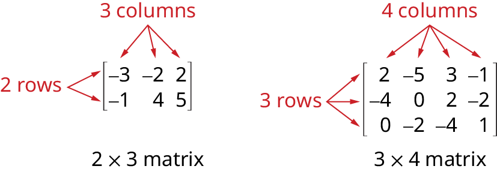
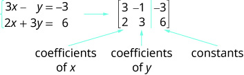
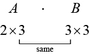
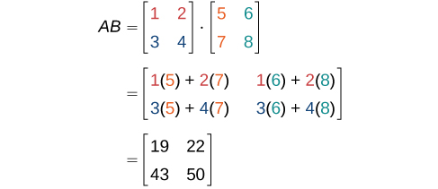

Matrices and Matrix Operations
Learning Objectives
- Write the augmented matrix for a system of equations (IA 4.5.1)
- Add, subtract matrices and multiply a matrix by a scalar
Objective 1: Write the augmented matrix for a system of equations (IA 4.5.1)
A matrix is a rectangular array of numbers arranged in rows and columns.
A matrix with m rows and n columns has dimension m×n.
Each number in the matrix is called an element or entry in the matrix.
The matrix on the left below has 2 rows and 3 columns and so it has order 2×3. We say it is a 2 by 3 matrix.

We will use a matrix to represent systems of equations.
Each column then would be the coefficients of one of the variables in the system or the constants.
A vertical line replaces the equal signs.
We call the resulting matrix the augmented matrix for the system of equations.

Write each system of linear equations as an augmented matrix
ⓐ
ⓑ
Solution
ⓐ We first rewrite the second equation in standard form
Next we write the augmented matrix
ⓑ Each equation is in standard form
Write the augmented matrix
Practice Makes Perfect
Write each system of linear equations as an augmented matrix
Objective 2: Add, subtract matrices and multiply a matrix by a scalar
We add or subtract matrices by adding or subtracting corresponding entries.
In order to do this, the entries must correspond. Therefore, addition and subtraction of matrices is only possible when the matrices have the same dimensions. We can add or subtract a 3 × 3 matrix and another 3 × 3 matrix, but we cannot add or subtract a 2 × 3 matrix and a 3 × 3 matrix because some entries in one matrix will not have a corresponding entry in the other matrix.
The process of scalar multiplication involves multiplying each entry in a matrix by a scalar. A scalar multiple is any entry of a matrix that results from scalar multiplication.
ⓐ Add the two matrices
ⓑ Subtract the two matrices
ⓒ Multiply the matrix by 5.
Solution
ⓐ
ⓑ
ⓒ
Practice Makes Perfect
Perform the indicated operations
Add the two matrices
Subtract the two matrices
Multiply the matrix by –2
Find when and
Two club soccer teams, the Wildcats and the Mud Cats, are hoping to obtain new equipment for an upcoming season. Table 1 shows the needs of both teams.
| Wildcats | Mud Cats | |
|---|---|---|
| Goals | 6 | 10 |
| Balls | 30 | 24 |
| Jerseys | 14 | 20 |
A goal costs $300; a ball costs $10; and a jersey costs $30. How can we find the total cost for the equipment needed for each team? In this section, we discover a method in which the data in the soccer equipment table can be displayed and used for calculating other information. Then, we will be able to calculate the cost of the equipment.
Finding the Sum and Difference of Two Matrices
To solve a problem like the one described for the soccer teams, we can use a matrix, which is a rectangular array of numbers. A row in a matrix is a set of numbers that are aligned horizontally. A column in a matrix is a set of numbers that are aligned vertically. Each number is an entry, sometimes called an element, of the matrix. Matrices (plural) are enclosed in [ ] or ( ), and are usually named with capital letters. For example, three matrices named and are shown below.
Describing Matrices
A matrix is often referred to by its size or dimensions: indicating rows and columns. Matrix entries are defined first by row and then by column. For example, to locate the entry in matrix identified as we look for the entry in row column In matrix shown below, the entry in row 2, column 3 is
A square matrix is a matrix with dimensions meaning that it has the same number of rows as columns. The matrix above is an example of a square matrix.
A row matrix is a matrix consisting of one row with dimensions
A column matrix is a matrix consisting of one column with dimensions
A matrix may be used to represent a system of equations. In these cases, the numbers represent the coefficients of the variables in the system. Matrices often make solving systems of equations easier because they are not encumbered with variables. We will investigate this idea further in the next section, but first we will look at basic matrix operations.
Finding the Dimensions of the Given Matrix and Locating Entries
Given matrix
- ⓐWhat are the dimensions of matrix
- ⓑWhat are the entries at and
Solution
- ⓐThe dimensions are because there are three rows and three columns.
- ⓑEntry is the number at row 3, column 1, which is 3. The entry is the number at row 2, column 2, which is 4. Remember, the row comes first, then the column.
Adding and Subtracting Matrices
We use matrices to list data or to represent systems. Because the entries are numbers, we can perform operations on matrices. We add or subtract matrices by adding or subtracting corresponding entries.
In order to do this, the entries must correspond. Therefore, addition and subtraction of matrices is only possible when the matrices have the same dimensions. We can add or subtract a matrix and another matrix, but we cannot add or subtract a matrix and a matrix because some entries in one matrix will not have a corresponding entry in the other matrix.
Finding the Sum of Matrices
Find the sum of and given
Solution
Add corresponding entries.
Adding Matrix A and Matrix B
Find the sum of and
Solution
Add corresponding entries. Add the entry in row 1, column 1, of matrix to the entry in row 1, column 1, of Continue the pattern until all entries have been added.
Finding the Difference of Two Matrices
Find the difference of and
Solution
We subtract the corresponding entries of each matrix.
Finding the Sum and Difference of Two 3 x 3 Matrices
Given and
- ⓐFind the sum.
- ⓑFind the difference.
Solution
- ⓐAdd the corresponding entries.
- ⓑSubtract the corresponding entries.
Finding Scalar Multiples of a Matrix
Besides adding and subtracting whole matrices, there are many situations in which we need to multiply a matrix by a constant called a scalar. Recall that a scalar is a real number quantity that has magnitude, but not direction. For example, time, temperature, and distance are scalar quantities. The process of scalar multiplication involves multiplying each entry in a matrix by a scalar. A scalar multiple is any entry of a matrix that results from scalar multiplication.
Consider a real-world scenario in which a university needs to add to its inventory of computers, computer tables, and chairs in two of the campus labs due to increased enrollment. They estimate that 15% more equipment is needed in both labs. The school’s current inventory is displayed in Table 2.
| Lab A | Lab B | |
|---|---|---|
| Computers | 15 | 27 |
| Computer Tables | 16 | 34 |
| Chairs | 16 | 34 |
Converting the data to a matrix, we have
To calculate how much computer equipment will be needed, we multiply all entries in matrix by 0.15.
We must round up to the next integer, so the amount of new equipment needed is
Adding the two matrices as shown below, we see the new inventory amounts.
This means
Thus, Lab A will have 18 computers, 19 computer tables, and 19 chairs; Lab B will have 32 computers, 40 computer tables, and 40 chairs.
Multiplying the Matrix by a Scalar
Multiply matrix by the scalar 3.
Solution
Multiply each entry in by the scalar 3.
Finding the Sum of Scalar Multiples
Find the sum
Solution
First, find then
Now, add
Finding the Product of Two Matrices
In addition to multiplying a matrix by a scalar, we can multiply two matrices. Finding the product of two matrices is only possible when the inner dimensions are the same, meaning that the number of columns of the first matrix is equal to the number of rows of the second matrix. If is an matrix and is an matrix, then the product matrix is an matrix. For example, the product is possible because the number of columns in is the same as the number of rows in If the inner dimensions do not match, the product is not defined.

We multiply entries of with entries of according to a specific pattern as outlined below. The process of matrix multiplication becomes clearer when working a problem with real numbers.
To obtain the entries in row of we multiply the entries in row of by column in and add. For example, given matrices and where the dimensions of are and the dimensions of are the product of will be a matrix.
Multiply and add as follows to obtain the first entry of the product matrix
- To obtain the entry in row 1, column 1 of multiply the first row in by the first column in and add.
- To obtain the entry in row 1, column 2 of multiply the first row of by the second column in and add.
- To obtain the entry in row 1, column 3 of multiply the first row of by the third column in and add.
We proceed the same way to obtain the second row of In other words, row 2 of times column 1 of row 2 of times column 2 of row 2 of times column 3 of When complete, the product matrix will be
Multiplying Two Matrices
Multiply matrix and matrix
Solution
First, we check the dimensions of the matrices. Matrix has dimensions and matrix has dimensions The inner dimensions are the same so we can perform the multiplication. The product will have the dimensions
We perform the operations outlined previously.

Multiplying Two Matrices
Given and
- ⓐ Find
- ⓑ Find
Solution
- ⓐAs the dimensions of are and the dimensions of are these matrices can be multiplied together because the number of columns in matches the number of rows in The resulting product will be a matrix, the number of rows in by the number of columns in
- ⓑThe dimensions of are and the dimensions of are The inner dimensions match so the product is defined and will be a matrix.
Using Matrices in Real-World Problems
Let’s return to the problem presented at the opening of this section. We have Table 3, representing the equipment needs of two soccer teams.
| Wildcats | Mud Cats | |
|---|---|---|
| Goals | 6 | 10 |
| Balls | 30 | 24 |
| Jerseys | 14 | 20 |
We are also given the prices of the equipment, as shown in Table 4.
| Goal | $300 |
| Ball | $10 |
| Jersey | $30 |
We will convert the data to matrices. Thus, the equipment need matrix is written as
The cost matrix is written as
We perform matrix multiplication to obtain costs for the equipment.
The total cost for equipment for the Wildcats is $2,520, and the total cost for equipment for the Mud Cats is $3,840.
Using a Calculator to Perform Matrix Operations
Find given
Solution
On the matrix page of the calculator, we enter matrix above as the matrix variable matrix above as the matrix variable and matrix above as the matrix variable
On the home screen of the calculator, we type in the problem and call up each matrix variable as needed.
The calculator gives us the following matrix.
Key Concepts
- A matrix is a rectangular array of numbers. Entries are arranged in rows and columns.
- The dimensions of a matrix refer to the number of rows and the number of columns. A matrix has three rows and two columns. See Example 3.
- We add and subtract matrices of equal dimensions by adding and subtracting corresponding entries of each matrix. See Example 4, Example 5, Example 6, and Example 7.
- Scalar multiplication involves multiplying each entry in a matrix by a constant. See Example 8.
- Scalar multiplication is often required before addition or subtraction can occur. See Example 9.
- Multiplying matrices is possible when inner dimensions are the same—the number of columns in the first matrix must match the number of rows in the second.
- The product of two matrices, and is obtained by multiplying each entry in row 1 of by each entry in column 1 of then multiply each entry of row 1 of by each entry in columns 2 of and so on. See Example 10 and Example 11.
- Many real-world problems can often be solved using matrices. See Example 12.
- We can use a calculator to perform matrix operations after saving each matrix as a matrix variable. See Example 13.
Section Exercises
Verbal
Can we add any two matrices together? If so, explain why; if not, explain why not and give an example of two matrices that cannot be added together.
Solution
No, they must have the same dimensions. An example would include two matrices of different dimensions. One cannot add the following two matrices because the first is a matrix and the second is a matrix. has no sum.
Can we multiply any column matrix by any row matrix? Explain why or why not.
Can both the products and be defined? If so, explain how; if not, explain why.
Solution
Yes, if the dimensions of are and the dimensions of are both products will be defined.
Can any two matrices of the same size be multiplied? If so, explain why, and if not, explain why not and give an example of two matrices of the same size that cannot be multiplied together.
Does matrix multiplication commute? That is, does If so, prove why it does. If not, explain why it does not.
Solution
Not necessarily. To find we multiply the first row of by the first column of to get the first entry of To find we multiply the first row of by the first column of to get the first entry of Thus, if those are unequal, then the matrix multiplication does not commute.
Algebraic
For the following exercises, use the matrices below and perform the matrix addition or subtraction. Indicate if the operation is undefined.
Solution
Solution
Solution
Undidentified; dimensions do not match
For the following exercises, use the matrices below to perform scalar multiplication.
Solution
Solution
Solution
For the following exercises, use the matrices below to perform matrix multiplication.
Solution
Solution
Solution
For the following exercises, use the matrices below to perform the indicated operation if possible. If not possible, explain why the operation cannot be performed.
Solution
Undefined; dimensions do not match.
Solution
Solution
For the following exercises, use the matrices below to perform the indicated operation if possible. If not possible, explain why the operation cannot be performed. (Hint: )
Solution
Solution
Undefined; inner dimensions do not match.
Solution
Solution
Solution
For the following exercises, use the matrices below to perform the indicated operation if possible. If not possible, explain why the operation cannot be performed. (Hint: )
Solution
Solution
Solution
Solution
Solution
Technology
For the following exercises, use the matrices below to perform the indicated operation if possible. If not possible, explain why the operation cannot be performed. Use a calculator to verify your solution.
Solution
Solution
Extensions
For the following exercises, use the matrix below to perform the indicated operation on the given matrix.
Solution
Solution
Using the above questions, find a formula for Test the formula for and using a calculator.
Solution
Analysis
Notice that the products and are not equal.
This illustrates the fact that matrix multiplication is not commutative.